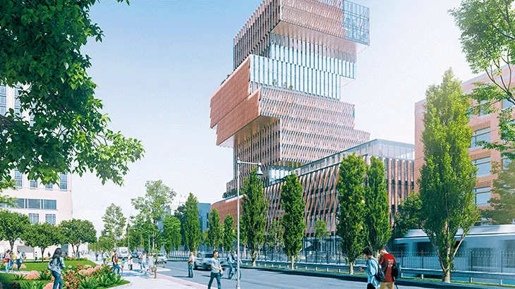

DESDE LA TIERRA AL CIELO
QUIENES SOMOS
Holcim Argentina pertenece al Grupo Holcim y es líder mundial en soluciones innovadoras y sostenibles para la construcción. Con más de 90 años de trayectoria en Argentina, emplea a más de 1.000 colaboradores/as y posee una amplia cobertura del territorio nacional. Cuenta con cuatro plantas de cemento ubicadas en las provincias de Córdoba, Mendoza, Jujuy y Buenos Aires. Asimismo, dispone de plantas fijas y móviles de hormigón elaborado; una planta de agregados pétreos; y otra de coprocesamiento de residuos industriales, llamada Geocycle. En Holcim, trabajamos para las ciudades del futuro. Se estima que la población mundial alcance los 10 mil millones para 2050, y que el 70% de las personas vivan en ciudades para entonces. Dado que 1.600 millones de personas carecen de vivienda y saneamiento adecuados, necesitamos construir ciudades habitables que funcionen para todos. En Holcim, somos parte de la solución. Unidos en nuestra visión de ser el líder mundial en soluciones de construcción innovadoras y sostenibles, desempeñamos un papel esencial para acelerar la transición de nuestro mundo hacia un futuro más inclusivo y con cero emisiones netas. Impulsados por nuestro propósito de generar progreso para las personas y el planeta, estamos a la vanguardia de las soluciones de construcción sostenibles.
CIUDADES MÁS VERDES
Haciendo que las ciudades sean más ecológicas, desde los cimientos hasta los techos, con soluciones bajas en carbono y energéticamente eficientes. La construcción sostenible comienza con materiales bajos en carbono, como la gama más amplia del mundo de hormigón verde, ECOPact. El proyecto Aña Cuá de la Central Hidroeléctrica Yacyretá Argentina utiliza nuestro hormigón bajo en carbono.
MÁS INTELIGENTES

Empoderando a la sociedad con infraestructuras más inteligentes, desde la movilidad y la energía renovable hasta el saneamiento esencial. Tenemos una oportunidad única en una generación de poner la acción climática en el centro de nuestra recuperación global. La infraestructura inteligente puede ayudar a los países a lograr sus objetivos de cero emisiones netas, y es ahora el momento de actuar.
PARA TODAS LAS PERSONAS
Mejorando el nivel de vida de todas las personas con soluciones asequibles y sostenibles.Holcim tiene como objetivo prosperar con nuestra gente y comunidades. Para cerrar la brecha de infraestructura crítica de nuestro mundo, estamos implementando soluciones locales, bajas en carbono y asequibles para aumentar el acceso a hogares y escuelas. Obtené más información sobre cómo las innovaciones, como Durabric y 3D Concrete Printing, están ayudando a las comunidades a construir de una manera más sostenible, asequible y acelerada.
LA AMBICIÓN
Holcim busca proteger la biodiversidad y, además, devolver más agua de la que se extrae. Lo que hacemos y lo que pretendemos hacer para construir el mañana.
Generar un cambio positivo global sobre la biodiversidad en nuestros sitios de explotación. Proporcionar las condiciones adecuadas de higiene de todos/as los/as colaboradores/as en sus sitios.
Ahorrar agua dulce en todas las líneas de negocio, entregando más agua a la naturaleza y comunidades en áreas de escasez.